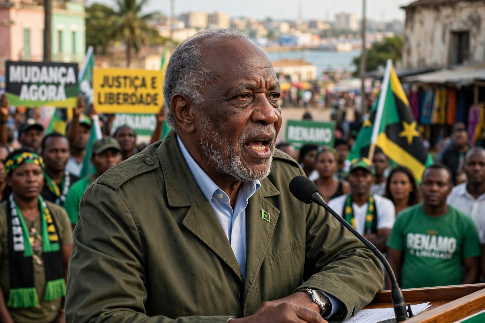

| Ossufo Momade | |
|---|---|
| Born | 1961, Mozambique Island, Portuguese Mozambique |
| Nationality | Mozambican |
| Political party | RENAMO |
| Office | President of RENAMO (from 2019) |

Ossufo Momade (born 1961) is a Mozambican politician and former guerrilla commander who has served as president of RENAMO, Mozambique's main opposition party and former rebel movement, since January 2019. He succeeded Afonso Dhlakama, RENAMO's leader of nearly four decades, who died in May 2018.
Momade was born on Mozambique Island in Nampula Province. He joined RENAMO as a young man during the Mozambican Civil War (1977–1992), rising through its military ranks to become a senior commander and chief of staff of its armed wing. After the 1992 Rome peace accords he entered politics, serving as a RENAMO deputy in the Assembly of the Republic and as the party's secretary-general before his election as leader.
As leader, Momade concluded negotiations with President Filipe Nyusi of FRELIMO, signing the Maputo Accord for Peace and National Reconciliation in August 2019, under which RENAMO fighters were to be disarmed, demobilised and reintegrated. He stood as RENAMO's presidential candidate in the October 2019 general election, finishing second to Nyusi amid RENAMO's rejection of the official results. A breakaway faction, the self-styled RENAMO Military Junta led by Mariano Nhongo, rejected his leadership and continued attacks in central Mozambique until Nhongo's death in 2021. Momade again contested the presidency in the disputed 2024 elections.